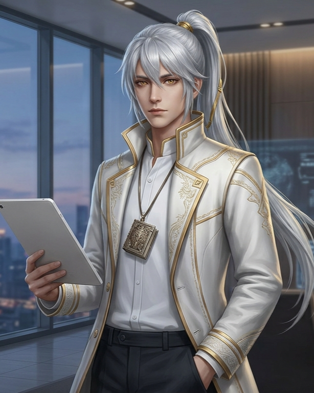

化形之外
BEYOND FORM
BEYOND FORM
世界將重新命名當記錄者被記錄之日
🖱️ 點選網頁左鍵繼續
你是一位剛通過激烈面試、滿懷熱血入職的職場新鮮人。
但在你踏進業務部辦公室的第一個禮拜，眼前的景象卻讓你倒吸一口涼氣：堆積如山的公文、同事們佈滿血絲的雙眼，以及鍵盤被瘋狂敲擊的啪啪聲。
這個部門正陷入一場病態的「爆肝地獄」文化——主管為了壓榨產值不擇手段，同事之間為了搶客戶、奪資源而天天明爭暗鬥、互相甩鍋。無止境的加班和惡性競爭，讓整個部門的流動率高得嚇人，團隊隨時處於崩潰邊緣。
身為新人又不想加班的你，立刻面臨了最殘酷的職場危機：如果不能在實習期內想辦法生存下來並改造這個有毒的部門文化，你將會成為下一個被犧牲的祭品。
深吸一口氣，你推開了總經理辦公室的大門，迎接你的，是掌握你生殺大權的兩位高層……
正在初始化對話...


很久以後，當我站在那個足以改變世界命運的交叉路口時，我常常會回想起這個平凡又難忘的深夜。
那時的我，天真地以為自己只是剛熬過了一場被 HR 淘汰的危機，甚至還沾沾自喜地以為，自己真的拿到了改造部門爆肝文化的許可...。
我以為那只是一場幸運的轉職，殊不知，命運真正的劇本，才正要被展開。
今天，我調任到核心專案組的第一天。
我關閉公用電腦的前一秒，漆黑的螢幕倒映出我疲憊的臉，然後，它自行亮起了。
那是一封沒有寄件人、沒有主旨的加密郵件。在好奇心的驅使下，我點開了它，也點開了那扇通往深淵的大門。頂端那四個暗紅色的字體，至今仍經常出現在我的噩夢裡——「吞日計畫」。
檔案裡記錄的根本不是業績，而是全公司員工的名字，後面緊跟著實時跳動的「心率、抗壓值」……以及一欄冰冷的數據：「瘋狂墮化指數」。那一刻我才徹骨生寒地明白，公司從不是盲目地壓榨勞動力。那些逼人的高壓、挑起的內鬥、崩潰的加班，全是一場被精準計算的「壓力實驗」，目的在於故意將特定員工逼向精神的臨界點。
而在檔案最下方的核准欄，那個平日裡對我優雅微笑的數位簽章，顯得無比刺眼：『核准人：總經理 蘇恬』。
下方留有一行用鮮紅字體標註的系統警語：
『當命運開始被批量製造，世界將失去選擇的意義。計畫已鎖定下一位實驗體。』
寂靜的辦公室裡，只剩下我急促的心跳聲。我猛然抬頭看著四周熟悉的辦公桌，全身發抖。原來，我們根本不是什麼職場奮鬥的新鮮人，我們所有人，都不過是被圈養在數據格裡的實驗白老鼠。
但我那時還不知道，這封郵件，僅僅是我撕開這家公司、乃至於這個世界黑幕的……一個驚天開始。
嘿！你就是總經理親點調來的新人吧？聽說你在業務部搞了個大動作，有衝勁！ 實話告訴你，我們接下來要推動『跨國智慧管理系統』，只要成功，就能徹底掀翻公司爆肝加班的爛制度！ 但現在夏凌正盯著我們的預算，我們第一步必須在不被他抓到把柄的情況下，拿到海外分公司的測試數據。挑戰來了，你有膽量跟我一起幹這條大的嗎？你打算用什麼策略幫專案跨出這第一步？說聽聽你的計畫！